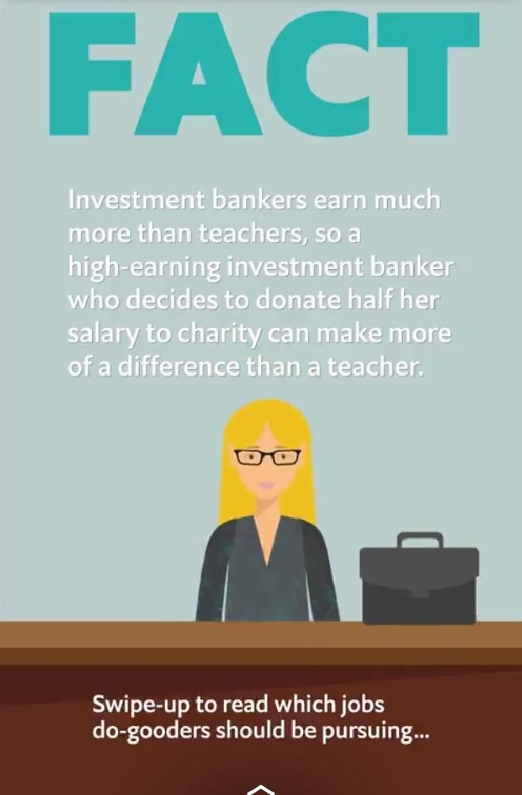
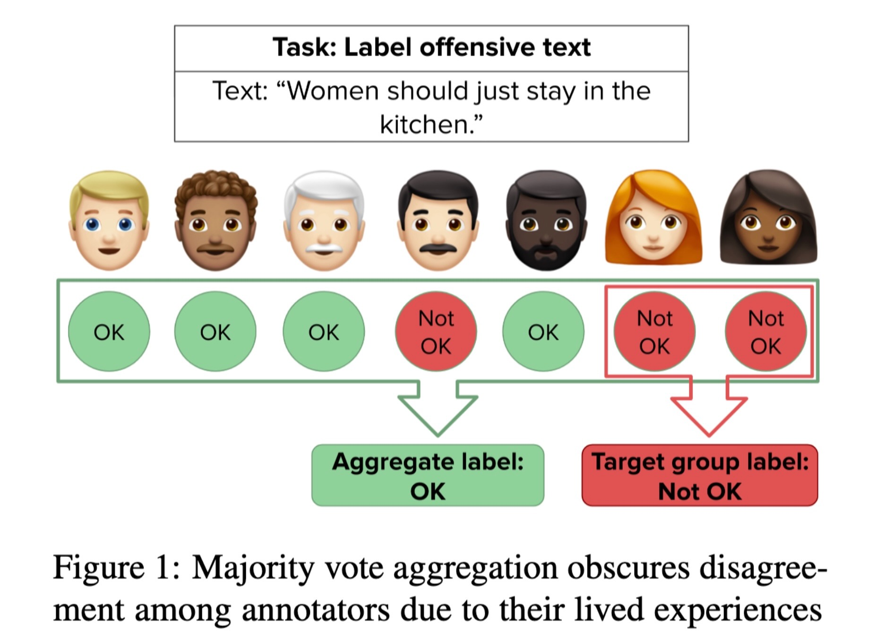
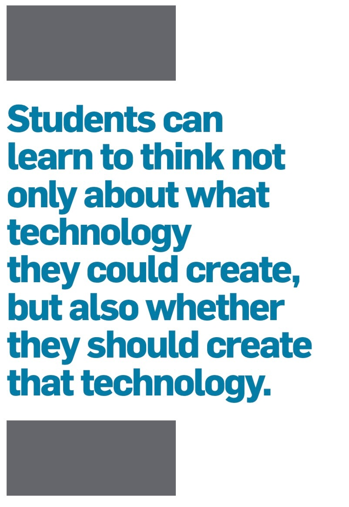

Week 10: Econometric Policy Evaluation and Inverse Fairness
DSAN 5450: Data Ethics and Policy
Spring 2024, Georgetown University
Class Sessions
Policy Evaluation in General
Why Call It “Econometric” Policy Evaluation?
- In the same way that data science can be used for good or for not-so-good…
- Economics provides methods that allow us to evaluate a policy with respect to an ethical framework
- Typically efficiency and/or profit maximization, but just as easily Rawlsian or Roemerian
- “The master’s tools will never dismantle the master’s house”❓❓❓
- (“It’s certainly true that the master uses the tool of [data science], but that doesn’t mean he owns it.”)
The Tools of Economics as Wielded by Economists
- Fun in-class pop quiz!
The Tools of Economics as Wielded by Economists
- Did you answer correctly???

The Tools of Economics as Wielded by Economists
- Addendum / reminder (see also)
EAAMO 2023 Accepted Papers
Equity and Access in Algorithms, Mechanisms, and Optimization
-
Assignments graded later in the sequence tend to (1) receive lower grades, (2) receive comments that are notably more negative and less polite, and (3) exhibit lower grading quality measured by post-grade complaints.
“Potty Parity: Process Flexibility via Unisex Restroom”
Having a one-unit unisex restroom, either by converting a unit of the men’s restroom or building an additional one, goes a long way toward improving wait time or user utility, and reducing their disparities
Co-Founder of MD4SG \(\rightarrow\) EAAMO: Rediet Abebe

Lily Hu
- CS excludes ethical considerations “by design”, via focus on how computers do work, not how they ought to work.
- The latter “falls within the purview of the normative disciplines, most notably ethics, a subfield of philosophy. For students to succeed at learning not only how to build innovative computing systems, but also how to determine whether they should build those systems or how ethical considerations should constrain their design, it is imperative that these two disciplines work together. To this end, Harvard CS and Philosophy faculty have been partnering to develop the Embedded EthiCS curriculum.”

Ninja Coder Hackerz / Think It! Dream It! Do It!
- CS: Learn The Coolest, Newest Stuff, Move Fast And Break Things!!!
- Ethics: Listen to a man in a tweed jacket with elbow pads pontificate about Kant for 3 hours
- The TED Talk Circuit
Policy Evaluation via Inverse Fairness
We Can Finally Understand This Image from Week 1!

References
Sen, Amartya. 1992. Inequality Reexamined. Clarendon Press.
Social Welfare Functionals
Functionals?
We Live In A Society, Part 2
\[ W(\mathbf{u}) = W(u_1, \ldots, u_n) \Rightarrow W(\mathbf{u})(x) = W(u_1(x), \ldots, u_n(x)) \]
Alternative SWF Specifications
\[ W(\underbrace{v_1, \ldots, v_n}_{\text{Values}})(x) \overset{\text{e.g.}}{=} \omega_1\underbrace{v_1(x)}_{\text{Privacy}} + \omega_2\underbrace{v_2(x)}_{\mathclap{\text{Public Health}}} \]
\[ W(\underbrace{s_1, \ldots, s_n}_{\text{Stakeholders}})(x) = \omega_1\underbrace{u_{s_1}(x)}_{\text{Teachers}} + \omega_2\underbrace{u_{s_2}(x)}_{\text{Parents}} + \omega_3\underbrace{u_{s_3}(x)}_{\text{Students}} + \omega_4\underbrace{u_{s_4}(x)}_{\mathclap{\text{Community}}} \]
Utilitarian SWF
\[ W(u_1, \ldots, u_n)(x) = \frac{1}{n}u_1(x) + \cdots + \frac{1}{n}u_n(x) \]
The Hard Problem of Utilitarian SWF